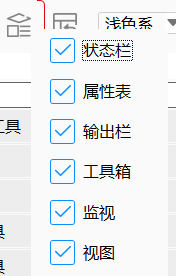
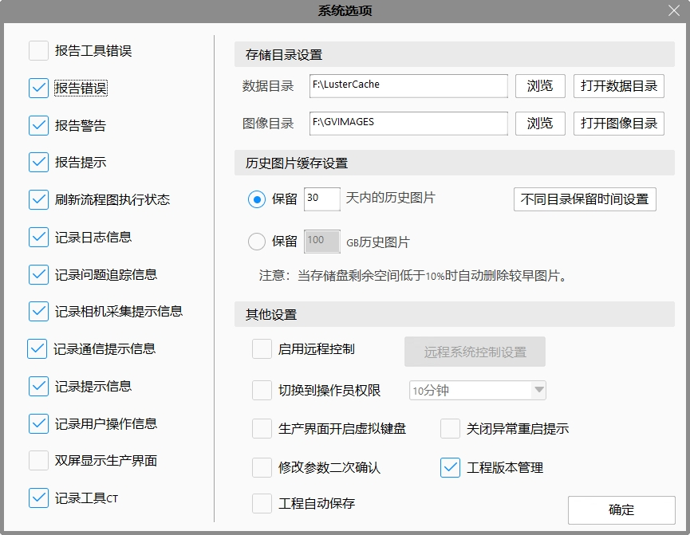
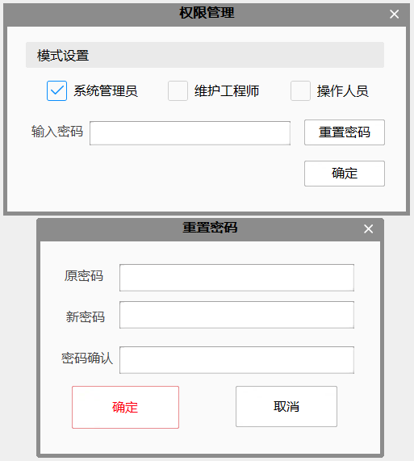
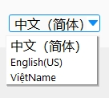
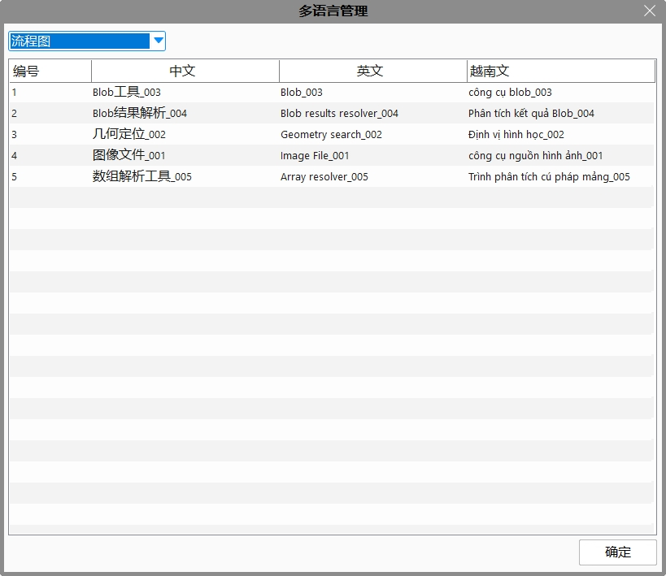
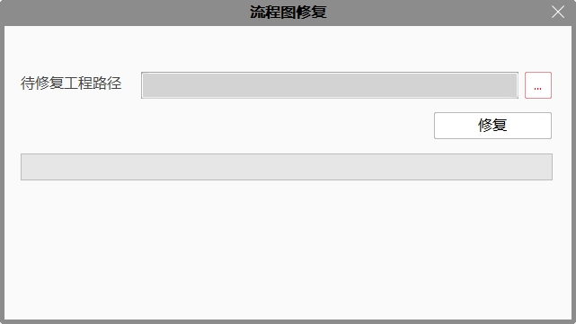
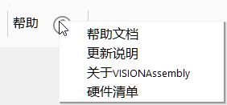

筛选窗口
可勾选配置主界面显示的窗口，主要包括状态栏、属性表、输出栏、工具箱、监视和视图。

状态栏：显示CPU利用率、内存使用率、磁盘使用率、当前作业、软件版本和当前时间等等；
属性表：显示的工具的属性；
输出栏：工具或者软件报错的错误、警告、提示和查找信息；
工具箱：是用于显示各种工具；参考：工具箱
监视：将关注的数据添加到监视，实时显示工具的执行结果或者变量等；
视图：Edit、Result和自定义添加的视图；
系统选项
可勾选配置需要记录的信息、报告的错误、图像和数据路径设置、历史图片缓存设置、开启远程系统控制、自动切换到操作员权限、生产界面开启虚拟键盘等。参考：系统选项

恢复默认窗口布局
当找不到某些窗口，恢复默认窗口布局可以帮助你找到丢失的窗口；
布局被打乱又弄不好时，恢复默认窗口布局可以帮助你回到初始布局；
权限
权限按照操作流程图的权限高低，由高到低分为三种权限，系统管理员、工程师、操作人员。
系统管理员：拥有全部权限
工程师：无权限做和业务流程相关的操作：如修改数据链、拖拽工具等。拥有更改模板、硬件参数等权限。
操作人员：可以操作工程的保存、可切换工具查看状态、可切换运行/编辑界面，无权改变业务流程和模板。
使用方式：默认的工程未设置密码，勾选权限并点击确定，即可设置为对应权限。如需设置密码点击“重置密码”按钮。

语言
可切换软件语言，分为中文（简体）、English（US）、越南语。
软件会保存最后的语言环境，再次打开软件，会按照保存的语言进行语言设置，即关闭软件时为英文环境，再次启动软件也为英文环境；同时，加载中文版的gvp文件软件会切换到中文环境，英文的会切换到英文环境。

编辑多语言
可以对其他语言进行翻译，比如软件是中文环境，打开编辑多语言界面，可以对英文进行编辑。第二列为当前语言的数据，不可以修改，第三列、第四列为其他语言的数据，可以修改。此界面支持简单筛选的功能，生产界面会显示和生产界面相关的多语言数据，流程图会显示流程图里面用的多语言数据。目前工程名称、视图名称、流程图图元名称、布局名称和生产界面编辑的Button、checkBox和Label都支持多语言。但是需要手动翻译成其他语言。软件在切换语言的时候，会切换成对应语言环境下的已经翻译好的或者默认的语言数据。
注意：图像采集工具的相机名称、视图编辑的参数标签数据、参数修改里面的变量说明、更多控制按钮名称暂不支持多语言。
对于旧工程，由于没有经过翻译，各种语言的数据都是一样的；但是，流程图会使用工具的默认名称。

工程版本
工程版本管理功能主要对工程的变更进行详细记录，供后续追溯工程的变更历史。主要包括版本信息写入和版本历史查看两部分功能。当开启工程版本管理后，每次保存工程时，需要写入版本号及版本相关信息。打开菜单栏版本信息管理窗口，可以查看工程的所有历史版本。

诊断修复
- 流程图修复：主要针对流程图断裂、流程图图元无法组合等问题对工程的流程图进行修复

帮助

帮助文档：软件的使用说明文档。
更新说明：当前版本发布做了优化和修改重要缺陷的说明文档
关于：显示软件的版本号和产权信息。
硬件清单：描述了当前软件版本支持的2D相机、3D相机、PLC和光源控制器支持的型号和规格。